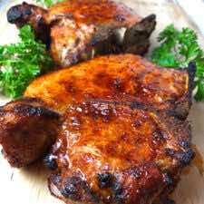

Best Damn Air Fryer Pork Chops
Air FryerPork
Servings2
PrepPT5M
CookPT12M

Ingredients
- 2 center-cut, bone-in pork chops, 1 1/2 – 2 inches thick
- 2 tablespoons brown sugar
- 1 tablespoon paprika
- 1 1/2 teaspoons salt
- 1 1/2 teaspoons fresh ground black pepper
- 1 teaspoon ground mustard
- 1/2 teaspoon onion powder
- 1/4 teaspoon garlic powder
- 1-2 tablespoons olive oil
Directions
- Preheat air fryer to 400 degrees for 5 minutes
- Rinse pork chops with cool water and pat dry completely with a paper towel.
- In a small bowl, mix together all the dry ingredients.
- Coat the pork chops with olive oil and rub in the mix. Rub it in well and liberally. Use almost all of the rub mix for the 2 pork chops.
- Cook pork chops in air fryer at 400 degrees for 12 minutes, flipping pork chops over after 6 minutes.
Source
https://recipeteacher.com/best-damn-air-fryer-pork-chops/
This page includes Schema.org Recipe structured data for recipe importers.